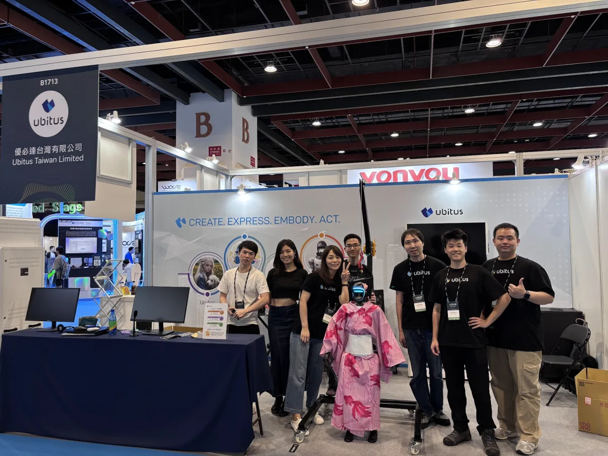
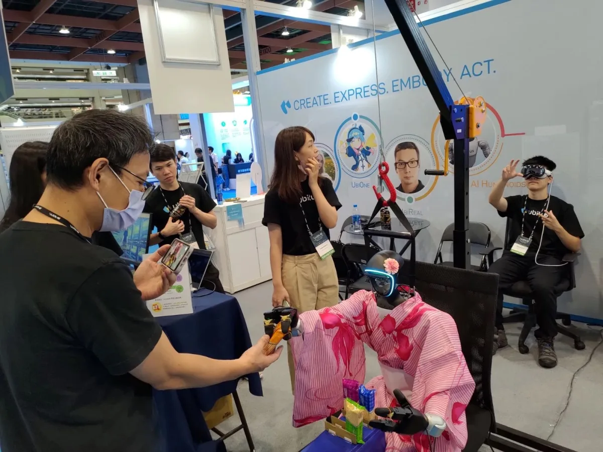
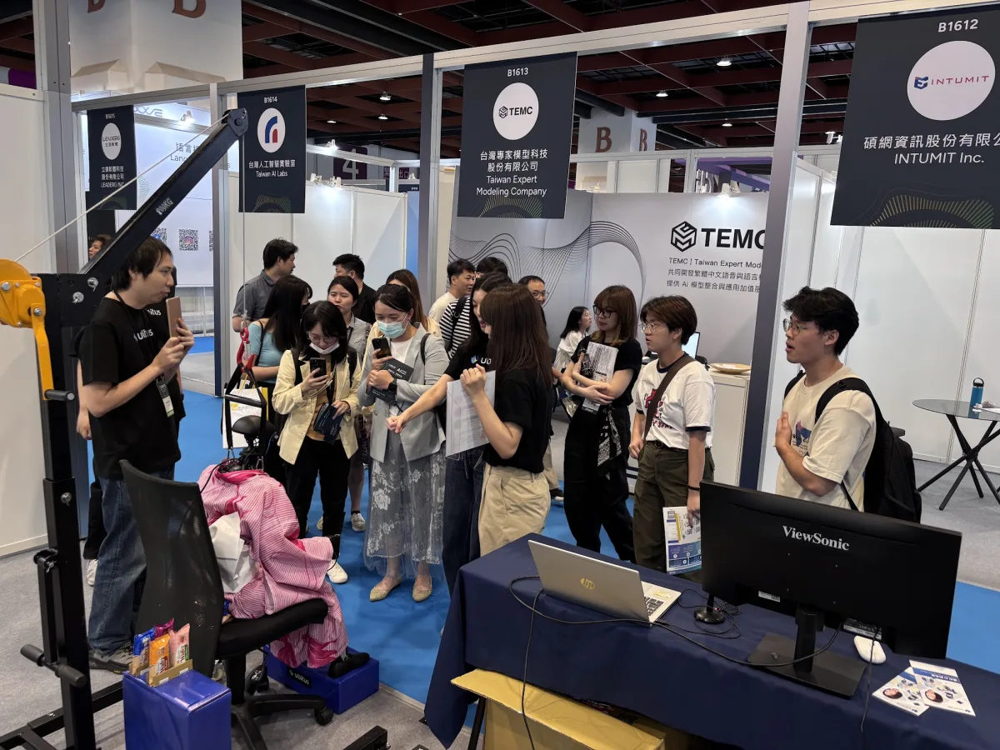

During my 12-week internship at Ubitus K.K., I joined the Terminal Device Group (TDG) working across web frontend, 3D, and CNF (Console and Frontier) teams. I worked on AI infrastructure, from semantic search retrieval to prompt-injection testing, and spent time in live demos at the AI WAVE exhibition.
Project Overview
My primary focus was developing a Model Context Protocol (MCP) server to enable UbiGPT, the company's large language model, to perform accurate and efficient semantic searches across multiple Milvus vector database collections. The project evolved through three phases. The final design reached a 77.8% F1 score on our internal eval, up from 58% with the L2-distance baseline.
Beyond the core MCP project, I built PromptGuard, a prompt-injection testing tool, and operated the Unitree G1 humanoid through Apple Vision Pro teleoperation in live demos at the AI WAVE 2025 exhibition.
Phase 1: MCP Server Foundation
Phase 1 took a coworker's database search
script, milvus_memory.py, and turned
it into a containerized MCP server. That became
the base for everything after it.
Server Design
Designed and built a Python-based MCP server to act as middleware between the UbiGPT LLM and the Milvus vector database. The design had to handle connection stability, data formatting, and errors to run reliably in production.
Key Technical Achievements
- Successfully containerized the existing database search script using Docker
- Established stable connection checks and consistent aliasing for MilvusDB
- Engineered data standardization, transforming returned document format from a list of dictionaries into structured JSON strings
- Added error handling and logging
- Wrote documentation for future maintenance and scaling
This phase laid the critical groundwork for single collection searches while designing the system with extensibility in mind for future cross-collection capabilities.
Phase 2: Cross-Collection Search
The most intellectually challenging phase involved enabling searches across multiple database collections. The question was how to balance LLM cognitive load, system performance, and search accuracy.
Three Designs I Benchmarked
Method A: Naive Approach (Discarded)
Initially considered searching all collections simultaneously but proactively discarded this approach after identifying significant performance bottlenecks and resource consumption issues.
Method B: "Three Tools" Approach
Gave the LLM three discrete tools:
list_collections,
list_schemas, and
search. This enabled agentic
discovery and step-by-step query processing,
giving the LLM maximum flexibility in
determining search strategies.
Method C: "One Tool" Approach (Selected)
Abstracts database complexity by pre-generating descriptions of all collections and schemas. This reduced cognitive load on the LLM while keeping search quality.
Implementation Details
The "One Tool" approach involved creating abstractions that combined collection metadata with schema information into a compact format for the LLM, with attention to information density, relevance filtering, and the size of the context window.
Phase 3: Search Result Optimization
The final phase improved search accuracy by replacing a distance metric with a cross-encoder re-ranker.
From L2 Distance to Re-ranking Models
Initially, the system relied on L2 (Euclidean) distance for filtering search results. While computationally efficient, this approach often missed semantically relevant results that didn't align closely in vector space. Switching to a cross-encoder re-ranker raised internal eval F1 from 58% to 77.8%.
Re-ranking Implementation
A cross-encoder re-ranker scores semantic relevance between the raw user query text and each retrieved document. This approach considers contextual meaning, synonyms, and conceptual relationships that pure vector distance calculations might miss.
Trade-off Analysis
L2 Distance Method
- Pros: Faster computation, lower latency
- Cons: Less nuanced, may miss relevant results
- Use Case: High-volume, speed-critical applications
Re-ranking Model
- Pros: Higher precision, semantic understanding
- Cons: Increased computation time
- Use Case: Quality-focused, accuracy-critical searches
I picked the re-ranking approach: the extra compute buys a large gain in search relevance.
PromptGuard: Prompt-Injection Testing
After the MCP server project I built PromptGuard, a prompt-injection testing tool, on top of utkusen's open-source promptmap.
Three LLM Roles
A target LLM is attacked, a controller LLM judges each result, and an Improver LLM reads the failures and proposes a hardened system prompt.
Framework Features
- Test Coverage: 50+ pre-built rules across 7 attack categories, including an override-rule category I added
- Automated Improvement: System automatically suggests fixes for vulnerable prompts
- Flexible Evaluation: Condition-based pass/fail criteria customizable for each test scenario
- YAML Configuration: Easy-to-modify rule sets with customizable conditions
- Multiple Output Formats: Both human-readable logs and machine-parseable JSON export
- Packaging: Refactored the scanner into a modular Python package, with UbiGPT provider support
Results
I used PromptGuard to harden the system prompts of 5 internal LLM products, and handed the QA team an automated way to re-run the tests.
Team Presentation
During the 11th week of my internship, I presented the security framework to managers and the QA team, demonstrating its capabilities and training team members on proper usage and customization techniques.
AI WAVE Exhibition - G1 Humanoid Robot
Beyond software development, I gained invaluable experience as the technical operator for the Unitree G1 humanoid at the AI WAVE 2025 exhibition, driving it through Apple Vision Pro teleoperation in live demos.
Exhibition Highlights
Live Robot Demonstration
Demonstrating the G1 humanoid robot's capabilities during live interactive sessions with exhibition visitors.
Exhibition Gallery



Technical Responsibilities
- Real-time technical troubleshooting and system monitoring during live demonstrations
- Interactive presentations for diverse audiences including industry professionals and general public
- Data collection for future reinforcement learning model development and user behavior analysis
- Cross-team coordination with the Marketing and BD teams for the exhibition
- Logged user-interaction data for future RL work
- Technical setup and calibration of robot systems for optimal exhibition performance
Skills Developed
This role required rapid problem-solving under pressure, clear communication with non-technical audiences, and the ability to explain complex AI concepts in accessible terms. The experience provided crucial insights into the practical deployment challenges of AI systems in real-world environments, while developing skills in public demonstration, technical presentation, and cross-functional collaboration in high-stakes exhibition settings.
Performance Analysis & Data-Driven Decision Making
A critical aspect of the project involved designing and running tests to measure system performance and guide design decisions.
Testing Methodology
Created extensive Google Sheets with multiple tabs to compare the "One Tool" and "Three Tools" methodologies across five critical evaluation criteria:
- Accuracy: Using F1 Score as the primary metric to balance Precision and Recall
- Runtime Performance: End-to-end latency analysis and bottleneck identification
- Single vs. Cross-Collection: Comparative effectiveness across search scopes
- Cross-Collection Keyword Search: Specialized testing for multi-collection scenarios
- Multilingual Capabilities: Validation across English, Japanese, and Traditional Chinese
Key Performance Insights
Runtime Analysis
Profiling showed about 95% of latency came from LLM generation rather than database operations. This is a profiling finding, not a speedup.
Accuracy
The cross-encoder re-ranker raised internal eval F1 from 58% with the L2-distance baseline to 77.8%.
Multilingual Validation
Ran the same queries translated into English, Japanese, and Traditional Chinese, confirming consistent performance and relevant results across all supported languages. This validation was crucial for the international deployment of the system.
Future Enhancement Proposals
Based on performance analysis, I proposed implementing LangGraph with a verification agent to critique and refine outputs from the generation agent, potentially reducing errors without significant time costs. Additionally, identified opportunities for implementing UV for better Python environment management across the organization.
Mentorship & Philosophical Growth
Beyond technical achievements, this internship provided profound personal and philosophical growth through mentorship from Vic Chung and Melody Wang, whose insights fundamentally shaped my understanding of engineering and problem-solving.
Engineering Philosophy
My mentors taught me that engineering is more than coding. It is about problem-solving. As they eloquently explained, "coding is just 描述事情的邏輯，是將邏輯具象化的工具" (coding is merely describing logic and making logic concrete). This perspective shift helped me understand that finding the right people to solve problems is as valuable as solving them yourself.
Profound Conversations
Our discussions explored deep philosophical questions that continue to influence my thinking:
- Nature of Life: What defines a living creature and consciousness
- Adaptation: The principle of 適者生存 (survival of the fittest) in technology and life
- Dimensions of Existence: The relationship between 物質與精神 (material and spiritual dimensions)
- Multi-dimensional Thinking: Understanding problems across different conceptual dimensions
- Spiritual Technology: The intersection of technological advancement and human spirit
- Metaphysical Questions: Discussions about higher-order organizing principles
Transformative Impact
These conversations were very worth continuing to think about deeply. They fundamentally changed my approach to engineering challenges, encouraging me to think holistically about systems, their purpose, and their impact on human experience.
Lasting Legacy
This 12-week experience has been characterized as "the most memorial experience in my life," with lessons and perspectives that will be carried forward into all future engineering endeavors. The combination of technical excellence and philosophical depth created a uniquely enriching internship experience.
Skills Developed
AI & Machine Learning
- RAG (Retrieval-Augmented Generation)
- Vector Databases
- LangGraph
- Model Context Protocol (MCP)
- Re-ranking Models
- Semantic Search
- LLM Integration
Database & Infrastructure
- Milvus Vector Database
- Docker Containerization
- System Design
- Performance Optimization
- Cross-Collection Querying
- Database Connection Management
Security & Testing
- Prompt Injection Defense
- Multi-LLM Pipelines
- Automated Security Testing
- YAML Configuration
- Vulnerability Assessment
- Security Framework Design
Development & Analysis
- Python
- Performance Analysis
- F1 Score Evaluation
- Multilingual Testing
- Data-Driven Decision Making
- System Integration
Project Continuity & Future Improvements
During the final weeks of the internship, I enhanced the MCP server by migrating from stdio to streamable-http, which improved calling efficiency. I also proposed using UV for Python environment management across the team.
The experience culminated in presenting my work to the 16-person TDG team during the 8th week, sharing both technical achievements and lessons learned with colleagues who will continue building upon this foundation.